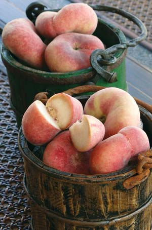
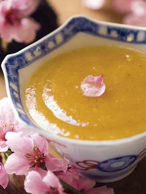
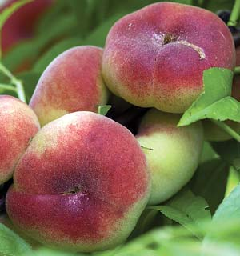
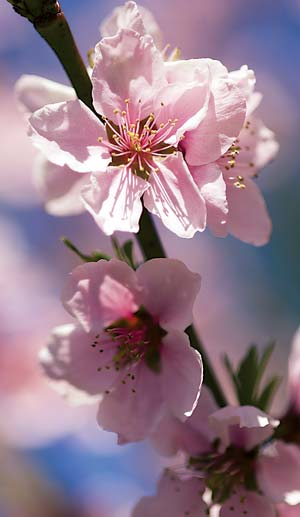

Old-time Chinese orchardists treated peaches with such reverence that they could be planted only within the royal precincts of the emperor. Their peaches were classified in one of two ways: golden (yellow flesh) or silver (white flesh). To the tribe of rare silver peaches belongs the mouthwatering peento (originally pan tao), the intensely flavored and odd-shaped peach we now know in the United States as the ‘Saturn’ peach. (Most U.S. peaches are yellow-fleshed varieties.) Low in acidity, much sweeter than yellow peaches and with almond overtones, ‘Saturn’ peaches simply taste better than other varieties. Plus, they’re easier to eat out of hand. The tiny pit doesn’t cling to the white flesh - you can pop it out with your thumb. Furthermore, ‘Saturn’ peach trees produce an abundant harvest, and the fruit’s thin red skin has little or no fuzz so it doesn’t have to be peeled.
Because of its unusual flattened shape, this peach is sometimes called the ‘Doughnut’ peach. Many supermarkets package the flat peaches in long boxes like those used for doughnuts, and market them as a good-for-you snack food.
This peach emerged in south China at least 200 years ago, and the tree was so tender that it could be grown only in a few places outside of its original habitat. However, the Rutgers Tree Fruit Research & Extension Center at Cream Ridge, N.J., changed that. The original Chinese peach was not cold-hardy enough to grow in New Jersey, not even in the counties well known for peach culture. So the breeders at Rutgers, through a long process of trial and error, selected out a strain of peento with frost-resistant buds. This is critical because the tree blooms early - even before many cherry trees - and the masses of fluffy pink flowers make a spectacular show that rivals the most ornamental cherry trees.
This resistance to late frosts is what distinguishes the ‘Saturn’ peach from its parent, and why it was given a new name. The name refers to the fruit’s resemblance to the rings of Saturn. And now the peach is spawning a raft of stranger nicknames that may create confusion at the supermarket. For example, the yellow-fleshed version of the ‘Saturn’ peach is called ‘Sweet Bagel,’ and a very large-fruited ‘Saturn’ peach has come out with the name ‘Jupiter’ peach. Maybe this exotic peach deserves something a little more poetic - old Chinese poetry includes more romantic names such as Moonlight Kiss and Morning Dew.
Rutgers released the original ‘Saturn’ peach about 15 years ago to Stark Bro’s Nurseries and Orchards Co., which was licensed to propagate the tree and sell it commercially. Now that the license has expired, many other growers are offering it, and that’s why we are beginning to see this peach in stores across the country. The ‘Saturn’ peach also is popular in the United Kingdom and other parts of the European Union.
The ‘Saturn’ peach has been bred to grow in cold-hardiness Zones 5 through 8, but the coldest parts of Zone 5 and the hottest parts of Zone 8 may present difficulties. The University of Florida is attempting to develop a strain more adaptable to the humid South, but no one has selected out a strain of ‘Saturn’ peach that will do well in the northern reaches of New England. Like other peaches, the ‘Saturn’ peach grows readily in most soils - just be sure to plant it in full sun. The tree usually will bear fruit in two to three years.
Most of the nursery stock now offered for sale is grafted to dwarf roots, so your trees will not grow much more than 10 to 12 feet in height. This is perfect for small properties, easy pruning and convenient harvesting. Transplant your trees when the ground thaws in early spring.
When it comes to peaches, pruning is everything. The idea is to keep the tree low and open so that it gets good air circulation. Aim for an overall shape that resembles a vase or giant V. Do not prune the trees in fall or early winter, because it will reduce their cold tolerance and likely cause extensive dieback (when the trees begin to die from the tips of branches toward the trunk). Early spring is the best time to prune, while the tree is still dormant but after the worst cold weather has passed.
The ‘Saturn’ peach has been bred to be highly resistant to bacterial canker, but in rainy climates, such as the Pacific Northwest, it needs protection from peach leaf curl, which can be prevented with a single spray of Bordeaux mixture, a copper-based fungicide available from many organic suppliers. Peaches usually are not prone to serious insect problems.
‘Saturn’ peach trees are self-fertile; you’ll get plenty of fruit (twice as many peaches as other varieties) even if you plant only one tree. To get them at their best, your peaches should be ripe on the tree and measure about 2 to 2 1/2 inches in diameter. They should be harvestable in mid to late July (a few weeks ahead of larger peach varieties), but you can tell when they are ready because they’ll be highly fragrant and soft to the touch.
While it may seem criminal to cook ‘Saturn’ peaches*, this 18th century Chinese recipe (from the court of the Ch’ing Dynasty) takes full advantage of their delicate flavor. It makes a great starter course either hot or cold. The following is an adaptation.
6 tbsp sugar
2 tbsp cornstarch
2 cups peach juice (or water)
2 tbsp butter (the Chinese use lard)
1 pound peaches, pared, seeded and chopped into small pieces
1 tbsp rose water
Combine the sugar, cornstarch and juice or water in a work bowl, whisking until the starch is completely dissolved. Heat the butter in a deep saucepan until it melts, then add the sugar mixture. Add the peaches and cook over medium heat for 15 to 20 minutes, or until soft. Pour this mixture into a blender or food processor and purée until smooth and creamy. Return the soup to the saucepan and bring it to a gentle boil. Remove from heat and add the rose water. Serve immediately or chill to serve cold.
Serves 4 to 6 as a starter.
*You may substitute another variety of fresh peach, but canned peaches will not work in this recipe.
Plan to order bare-root peach trees in the winter for early spring planting.
Bay Laurel Nursery
2500 El Camino Real
Atascadero, CA 93422
(805) 466-3449
Miller Nurseries
5060 West Lake Road
Canandaigua, NY 14424
(585) 396-9956
One Green World
28696 South Cramer Road
Molalla, OR 97038
(877) 353-4028
Raintree Nursery
391 Butts Road
Morton, WA 98356
(360) 496-6400
Stark Bro’s Nurseries & Orchards Co.
P.O. Box 1800
Louisiana, MO 63353
(800) 325-4180
William Woys Weaver is the author of 100 Vegetables and Where They Came From. Weaver enjoys eating ‘Saturn’ peaches out of hand in his Pennsylvania garden.
HIGHLY RECOMMENDED by the Mother Earth News editors:
Heirloom Vegetable Gardening: A Master Gardener’s Guide to Planting, Seed Saving and Cultural History by William Woys Weaver, now on CD. If you want to explore the fabulous flavors, fascinating history and amazing diversity of vegetables, this is the book to start with. Food historian and Mother Earth contributing editor Will Weaver profiles 280 heirloom varieties, with authoritative growing advice and incredible recipes. First published in 1997, Heirloom Vegetable Gardening has since been out of print, with used copies selling online for as much as $300. We are proud to present the original text, with color photos, as a digital book on CD-ROM. Order now.
|
 WILLIAM D. ADAMS ‘Saturn’ peaches have white flesh and are far better-tasting than other peach varieties. |
 ROB CARDILLO The best way to eat a fresh ‘Saturn’ peach surely is out of hand-as soon as you pick it. But you also can take your cue from Chinese royalty and transform delicious peaches into a tasty soup that can be served hot or cold. |
 ROB CARDILLO Because of their flat shape, ‘Saturn’ peaches have been given a variety of interesting appellations: ‘Doughnut,’ ‘Saucer,’ ‘Flat’ and ‘Bagel’ are a few. |
|
 ROB CARDILLO ‘Saturn’ peach trees provide a spectacular show of blossoms and an abundant harvest of terrific-tasting peaches. |
|
|